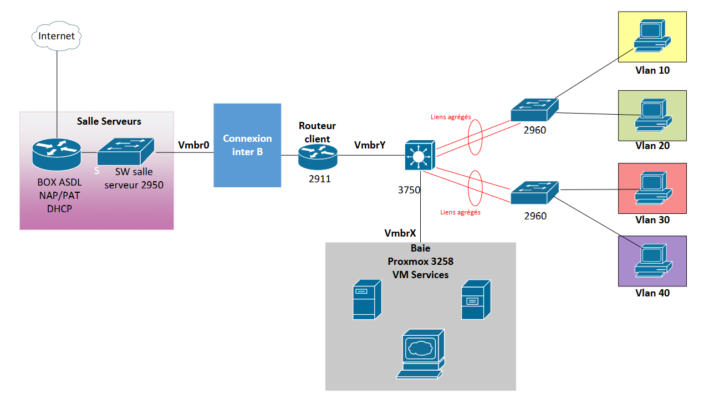

Présentation :
Ce projet est le plus gros projet de l'année car il reprend tout ce que l'on a appris au cours
de cette première année de BUT.
Il est composé en 4 parties : Anglais, Télécommunications, Mathématiques et Réseau.
En réseau nous avons dû réaliser une maquette par groupes de 3 :
L'objectif de cette maquette était de configurer un réseau composé d'une partie WAN simulée
sous GNS3,
d'une partie LAN et comportait une partie services (serveur web, contrôleur de domaine) avec
Proxmox.
Le réseau devait être sécurisé et réparti équitablement avec des VLAN.
Puis, nous avons eu un QCM pour valider ces connaissances.
En Mathématiques nous avons fait des exercices et découvert de nouvelles notions en
autonomie comme la borne de Cauchy par exemple.
En Télécommunications nous avons eu un TP dans lequel nous avons analysé des bandes de
fréquences et découvert les notions de FDM ainsi que sur les technologies 3G, 4G.
Enfin, en anglais nous avons eu une rédaction qui résumait tout ce que nous avions fait le
long de ce projet en Mathématiques, Réseau et Télécommunications. Avec du vocabulaire technique
à connaître.
Avec ce projet, j'ai appris :
RT1- Administrer les réseaux et l'Internet
Niveau 1 : Assister l'administrateur du réseau :
RT2 - Connecter les entreprises et les usagers
Niveau 1 : Découvrir les transmissions et la ToIP :
RT3 - Créer des outils et des applications informatiques pour les R&T
Niveau 1 :
S'intégrer dans un service informatique :
Ma Contribution :
Je me suis tout particulièrement concentrée sur la partie LAN du réseau : j'ai créé un
plan IP qui correspondait aux attentes demandées, j'ai configuré les switchs et le routeur.
De plus, j'ai aidé ma camarade lors de la liaison de la partie WAN vers la partie LAN : pour
cela
nous avons mis en place un routeur virtuel.
Preuves :
Partie Maths :
Partie Anglais :
Partie Télécommunications :
Partie Réseau :
Diagramme de Gant :
Schéma physique :
Schéma logique :
Analyse du projet et auto-évaluation :
Ce projet m'a permis de mettre à profit toutes les compétences que j'ai acquises tout au long de
l'année.
J'ai appris à travailler efficacement et en équipe et à planifier les tâches.
J'ai réussi à respecter toutes les dates limites que je m'étais imposées pour ne pas mettre mon
groupe en difficultés.
Je suis satisfaite de mon amélioration depuis le début de l'année,
j'ai su m'adapter et proposer un travail de qualité à mes professeurs.
Cependant, j'éprouve
encore des difficultés notamment en télécommunications. Pour régler cela je pense qu'il faut
que je travaille davantage sur mes heures personnelles pour être à la hauteur des attentes de
mes professeurs.